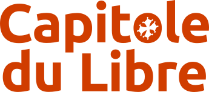
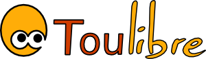

Nous sommes le

Le Capitole du Libre est un événement consacré aux Logiciels Libres et à la culture libre, organisé par l’association Toulibre, orienté à la fois vers le grand public et le public spécialisé. Des conférences et des ateliers ont lieu tout au long du week-end ; des stands et des animations seront proposés au public pour leur faire découvrir le monde du Libre.
Organisé par :
